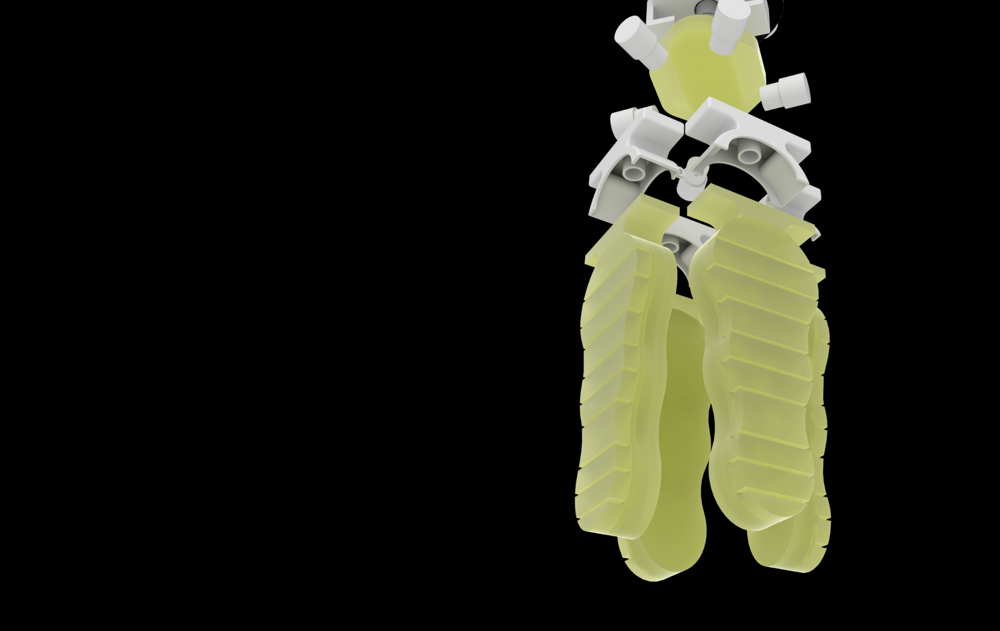

We do things with meaning: at heart, we are designers and researchers, creating products and workflows focused on resource efficiency and circularity. Our work sits at the intersection of hardware and software, computational design, bio materials and advanced manufacturing, weaving multiple disciplines to create products and workflows that embody purpose and functionality.
Research & Prototyping (Computer vision, machine learning, hardware & software etc.)
Development & Deployment (Final product & on-site installation)
Do you have a project you want to discuss?
Book a free consultation.
Computer vision vintage garment sorting
Scale daily throughput 10 times using a custom computer vision and robotic warehouse management. We automated photography, garment sorting, classification and shop management.
Automated footwear diagnosis and repair
Process 3.5 times more pairs of shoes using footwear digitisation, stain & defect detection, reinforcement learning and custom automatic cleaning hardware.
Vintage clothes warehouse
Sort and sell 10 times more clothes using computer vision and robotic warehouse management.
Find out all the lastest things that happened in and around our company + the next events we're organising.